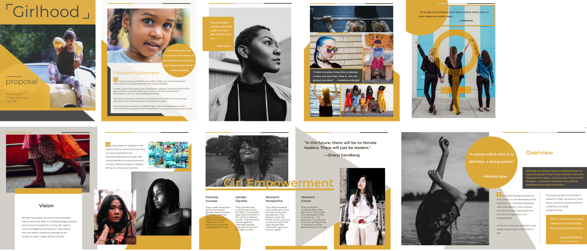

Define problemMy design practice starts from identifying the social issue and start a problem statement.
Extra work
Envisionwhat does the world look like if we solve the problem?
Research/data gatheringResearch to clarify the current situation and from there think about possible design solution to either present the problem and call for action or offer solutions for the problem.
Reference and analysis Look into the collection of ideas, culture, and history, as examples of the social, political, and economic climate.
CollaborationCollaborate with each other to exchange idea and work together with each other's strength. Be open-minded to new information or different opinion and perspective.
Waiting to be explored
OptimisticDesign shows that the belief of the future is going to be better than where we are today.
Waiting to be explored
ClarityDesign as transparent, let people see the truth instead of being manipulative.
Visual formVisual aid helps out to emphasize the functions of the text.
Building blocksEach element serves a purpose and together each block in the design functions as a whole to deliver a message.
Interact and engageExchange of knowledge, interactivity stimulates people's participation and serve the purpose of engageing wider audiences.
EvolvingBe aware of any form of movement is a process of continuously changing forms, "fluid"-like change.
Redefine and revisitGiven time and revisit and redefine the problem, prevent myself from going too quick to conclusion.
Story-tellingUnfold a story in design to invistigate a social issue.
PossibilitiesAllow imagination and creativity flow and find possble design solutions or different way to call for action.
StrategiesA plan of action and design structure to achieve a major goal or reach audiences.
Cultural interpretationIf design for other culture interpretate it properly from its perspective, invistigage specific cutlrual elements before coming out with design solution.
Waiting to be explored
Waiting to be explored